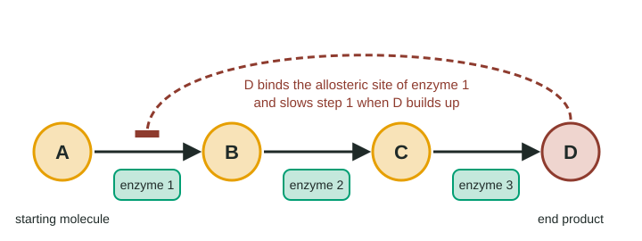

A cell is a busy, highly organized place: thousands of different molecules in the right places, ions held at very different concentrations on the two sides of the membrane, proteins built and repaired every minute. Keeping all that order going costs energy, all the time. This page explains the rules energy follows, and how cells use one molecule, ATP, to move energy from the reactions that release it to the jobs that need it.
Two rules energy always follows
In topic 1.1 you met kinetic energy (energy of motion, including heat) and potential energy (stored energy, including the chemical energy in bonds). Two laws of physics describe how energy changes form. Biology never breaks them.
The first law of thermodynamics: energy cannot be created or destroyed, only converted from one form to another. This is also called conservation of energy. A cell does not "make" energy. It takes energy in, as chemical energy in food or as energy from sunlight, and converts it.
The second law of thermodynamics: every energy conversion turns some energy into heat, which spreads out as random molecular motion and can no longer do useful work. As a result, the entropy, or disorder, of the universe always increases. No conversion is 100% efficient.
Living things are very ordered, which seems to fight the second law. They manage it by taking in a steady stream of energy and releasing heat to their surroundings; the disorder they release outweighs the order they build. Cut off the energy input and the order falls apart: gradients leak away, damaged molecules are not replaced, and the organism dies.
Worked example: an energy budget. A yeast culture breaks down 10.0 g of glucose, which holds 156 kJ of chemical energy. A calorimeter measures 109 kJ of heat released, and the new yeast cells built contain 47 kJ of chemical energy.
First law check: 109 + 47 = 156 kJ. Every kilojoule is accounted for; nothing was created or lost.
Efficiency: 47 ÷ 156 × 100 = 30% of the glucose energy ended up in new cells. The other 70% left as heat, the second law at work.
Metabolism: reactions in chains
Metabolism is the sum of all the chemical reactions in an organism. Most of them are organized into metabolic pathways: chains of steps in which the product of one reaction is the reactant of the next, and each step has its own enzyme.
- Catabolic pathways break large molecules into smaller ones and release energy. Breaking down glucose is catabolic.
- Anabolic pathways build large molecules from small ones and need energy. Building a protein from amino acids is anabolic.
Exergonic and endergonic reactions
Chemists track the energy a reaction can release to do work with a number called the free-energy change, ΔG. You do not need to calculate it from scratch, but you should be able to read and add ΔG values.
| Exergonic | Endergonic | |
|---|---|---|
| Energy | Released | Absorbed (needs an input) |
| ΔG | Negative | Positive |
| Products compared with reactants | Less energy | More energy |
| Happens on its own? | Yes, given enough time or an enzyme | No, unless coupled to an exergonic reaction |
| Examples | Breaking down glucose; ATP hydrolysis | Building proteins or starch; making ATP |
Remember from topic 3.2 that an enzyme changes how fast a reaction goes, not whether it releases or needs energy. ΔG is set by the reactants and products alone.
ATP: the energy go-between
ATP (adenosine triphosphate) has three phosphate groups in a row. The phosphates are negatively charged and repel each other, so the bonds holding the last one are easy to break and the products are much more stable. ATP hydrolysis, ATP + H₂O → ADP + Pi (ADP is adenosine diphosphate, Pi is inorganic phosphate), releases about 30.5 kJ/mol under standard conditions, and more under the conditions inside a cell.
Cells use ATP as a carrier, not a store (Figure 1). Energy released by breaking down food is used to add a phosphate back to ADP, making ATP. ATP then moves to wherever work is needed and is hydrolyzed again. Your body holds only about 50 g of ATP at a time but cycles through roughly 50 kg a day: each molecule is remade about a thousand times. Long-term energy is stored in fat and glycogen.

Energy coupling
An endergonic reaction can go if it is linked to an exergonic one so that the combined process releases energy. This is energy coupling, and in cells the exergonic partner is usually ATP hydrolysis. The ΔG values simply add.
Worked example: does the coupled process go? Making the amino acid glutamine from glutamate and ammonia has ΔG = +14.2 kJ/mol, so on its own it does not happen. Coupled to ATP hydrolysis (−30.5 kJ/mol):
ΔG(total) = −30.5 + 14.2 = −16.3 kJ/mol. Negative, so the coupled process goes.
A reaction with ΔG = +45.0 kJ/mol coupled to one ATP: −30.5 + 45.0 = +14.5 kJ/mol. Still positive; the cell would need two ATP (−61.0 + 45.0 = −16.0 kJ/mol).
Making ATP is the reverse: +30.5 kJ/mol. Muscles remake ATP fast from creatine phosphate, whose breakdown releases 43.0 kJ/mol: −43.0 + 30.5 = −12.5 kJ/mol.
How does the energy actually get passed along? Not as heat, which spreads out and cannot drive a particular reaction. The usual route is phosphorylation: an enzyme moves ATP's last phosphate onto a reactant or a protein.
- A phosphorylated reactant is less stable and more reactive. Glutamate gets a phosphate from ATP, and the phosphorylated glutamate then reacts readily with ammonia.
- A phosphorylated protein changes shape. A membrane pump changes shape when phosphorylated, moving ions across the membrane against their gradient; a muscle protein changes shape and pulls.
Redox reactions: energy riding on electrons
Much of the energy in food is released as electrons move from one molecule to another. A reaction in which electrons are transferred is a redox reaction (short for reduction-oxidation):
- Oxidation is the loss of electrons. The molecule that loses them is oxidized.
- Reduction is the gain of electrons. The molecule that gains them is reduced.
The two always happen together. In cells, electrons often travel with hydrogen atoms, so a molecule that loses hydrogen atoms is usually being oxidized. In the overall reaction of cellular respiration, C₆H₁₂O₆ + 6 O₂ → 6 CO₂ + 6 H₂O, glucose loses its hydrogens (and their electrons) and is oxidized; oxygen gains them and is reduced to water. Oxygen pulls on electrons very strongly, so electrons moving from glucose to oxygen release a lot of energy, like a ball rolling downhill. Topics 3.5 and 3.6 follow those electrons step by step.
Feedback inhibition: pathways that switch themselves off
Making a product the cell already has plenty of wastes raw materials and ATP. Many pathways are controlled by their own end product (Figure 2). When the end product builds up, it binds an allosteric site on an enzyme near the start of the pathway, usually the first, and changes its shape so it slows down (topic 3.3). The whole pathway slows. When the end product is used up, it leaves the allosteric site and the pathway speeds up again. This is feedback inhibition.

Why the first enzyme? Blocking the last step would let the earlier steps keep running, wasting material and piling up intermediates. Blocking the entrance saves everything downstream. A classic example: bacteria make the amino acid isoleucine from threonine in five steps, and isoleucine inhibits the first enzyme. Valine, a very similar amino acid, does not, which shows how specific the allosteric site is.
How the exam tests this
- Use the first and second laws to explain why organisms need a constant energy input and what happens without it.
- Decide from ΔG values whether a reaction, or a coupled pair, releases energy, and explain coupling through phosphorylation.
- Identify what is oxidized and what is reduced in a reaction.
- Explain feedback inhibition with data, and predict what happens when the allosteric site is changed.